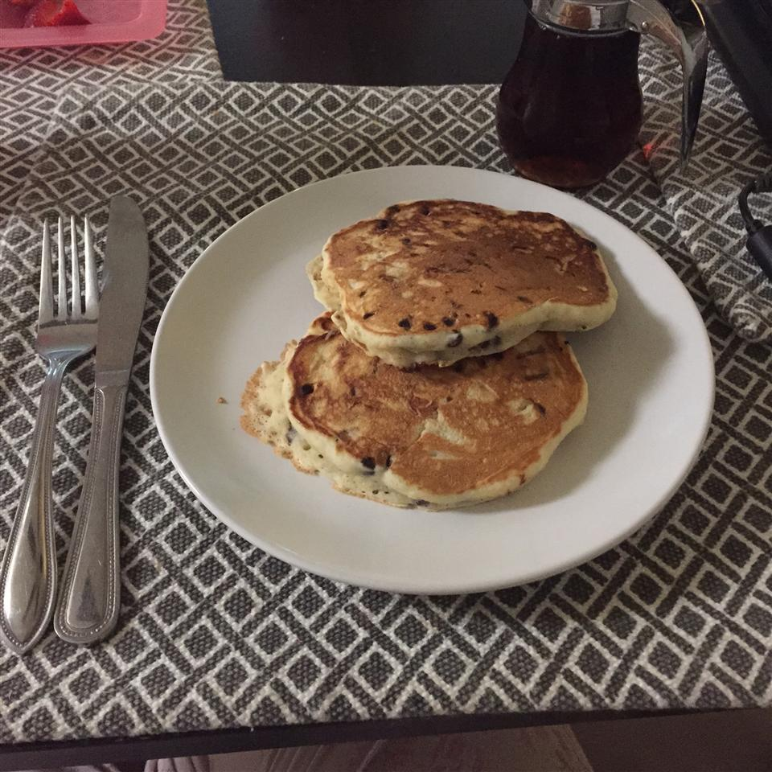

Chocolate Chip Pancakes

Description
Soft, fluffy, and easy to make! The chocolate chips can be
substituted with frozen berries that have been thawed.
Ingredients:
- 1 cup of all-purpose flour
- 2 tablespoons white sugar
- 1 tablespoon baking powder
- 1/4 teaspoon salt
- 1 egg
- 1 cup milk
- 2 tablespoons butter, melted and cooled
- 1/2 cup miniature chocolate chips
Directions:
- Sift flour, sugar, baking powder, and salt together in a bowl.
Beat egg into milk in a separate bowl until thoroughly combined.
- Pour melted butter into flour mixture; whisk in milk mixture to
make a smooth batter. Fold chocolate chips into batter.
- Heat a small nonstick skillet over heat; pour about 1/3 cup
of batter into hot skillet and cover with a lid.
- Cook pancake until browned on the bottom, about 3 minutes; flip
pancake and cook covered until other side is browned. Repeat.